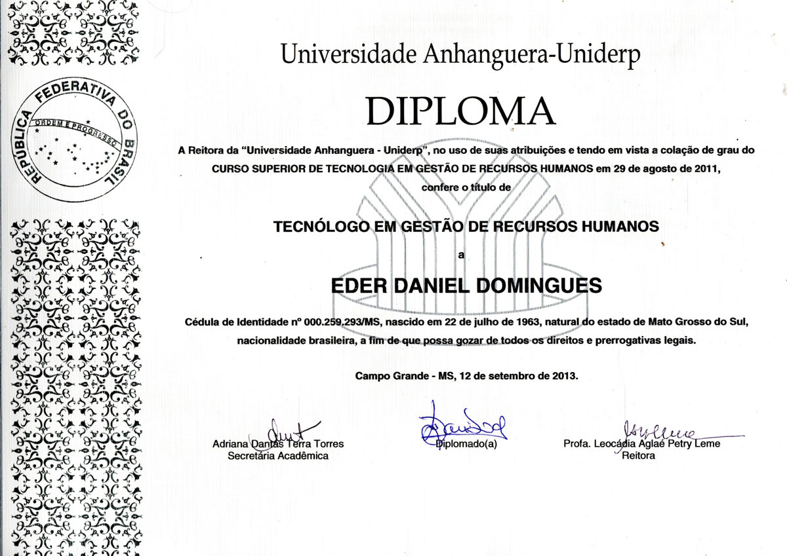
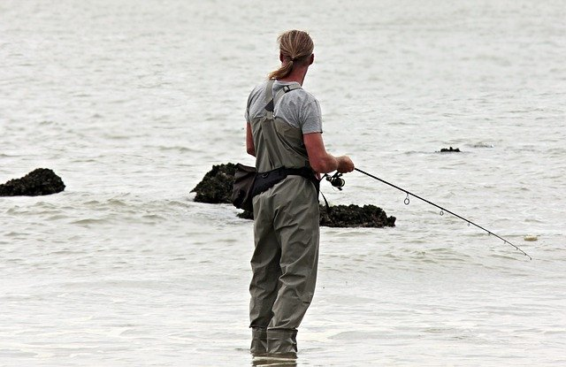

Buscando desenvolvimento pessoal para mudar de profissão, resolvi apostar na qualificação de minhas habilidades, um sonho antigo era o de ser programador, mas ainda sem rumo vaguei por diversos sites de ensino sem encontrar aquele algo a mais que me chamasse
a atenção.
Querendo aprender desenvolvimento de websites, com a melhor infraestrutura back e front end, para que, no futuro, possa oferecer a meus clientes condiçoes de usufruir de um conteúdo rico em informações e entretenimento, encontrei esse desafio
com o qual me simpatizei de imediato.
Este site foi construido durante a Imersão CSS da Alura, escola de desenvolvimento de websites, com a melhor infraestrutura back e front end e professores atualizados nas melhores tecnologias, para que os alunos possam usufruir de um conteúdo
repleto de informações para obter o melhor treinamento das suas habilidades. Confira o conteúdo deste projeto em:
Imersão CSS Alura
Meu sincero agradecimento, primeiro à Alura que proporcionou esse evento e depois aos professores que nos facilitaram esse conteúdo repleto de informações. Professores: Vanessa Tonini - https://twitter.com/ vanessametonini Juliana Amoasei
- https://twitter.com/aquijuz
Paulo Silveira - https://twitter.com/paulo_caelum e https://instagram.com/paulo_hipster
Formação e Propósitos futuros

Gestao de RH
Graduação 2011.
Student Mobile
Estudando Kotlin e Java Script para Mobile
Student Web design
Iniciando meus projetos em HTML e CSS

Depois do trabalho o prazer
Depois de muita luta é preciso descansar e nada melhor que uma boa pescaria para relaxar.